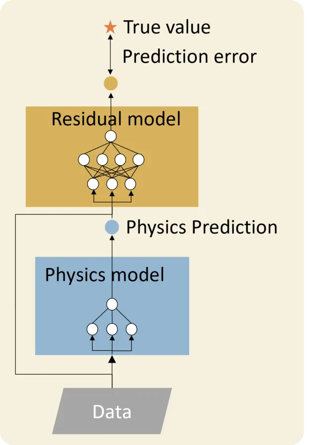
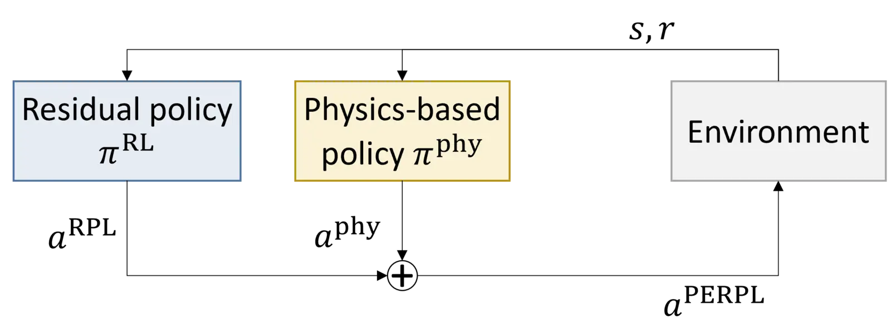
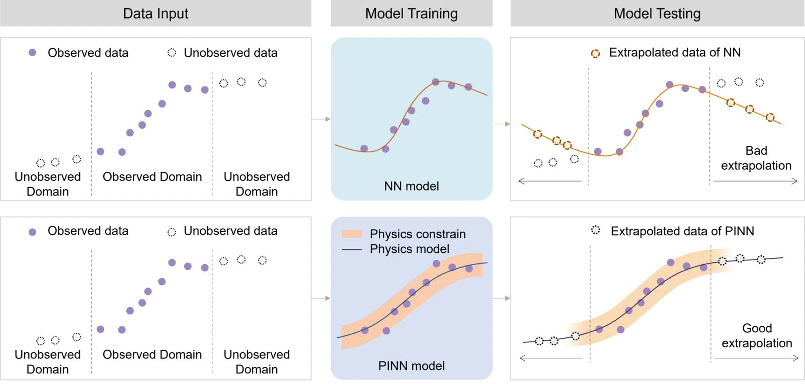

Paper
A Low-Rank Method for Vision Language Model Hallucination Mitigation in Autonomous Driving
arXiv, 2025
PaperThis research develops interpretable, physically consistent, and robust AI methods for transportation systems, with applications in multimodal reasoning, prediction, decision-making, and control.
arXiv, 2025
PaperTransportation Research Part C, 2025
Paper
Communications in Transportation Research, 2025
Paper
Communications in Transportation Research, 2024
Paper
Transportation Research Part C, 2026
Paper
Transportation Research Part E, 2024
Paper